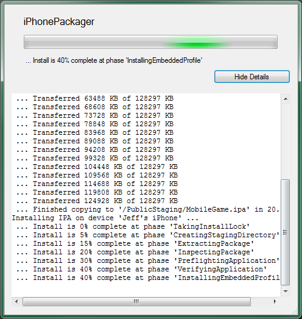
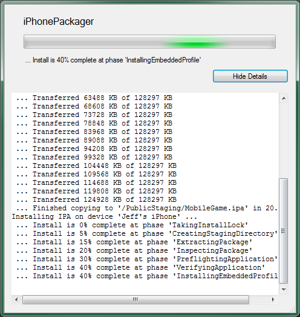
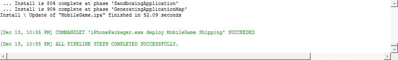
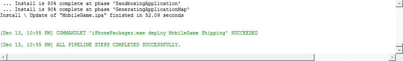

UDN
Search public documentation:
GettingStartediOSDevelopment
日本語訳
中国翻译
한국어
Interested in the Unreal Engine?
Visit the Unreal Technology site.
Looking for jobs and company info?
Check out the Epic games site.
Questions about support via UDN?
Contact the UDN Staff
中国翻译
한국어
Interested in the Unreal Engine?
Visit the Unreal Technology site.
Looking for jobs and company info?
Check out the Epic games site.
Questions about support via UDN?
Contact the UDN Staff
UE3 Home > Mobile Home > Getting Started: Developing Mobile Projects > Getting Started: iOS Development
UE3 Home > Getting Started: Unreal Engine 3 > Getting Started: Developing Mobile Projects > Getting Started: iOS Development
UE3 Home > Getting Started: Unreal Engine 3 > Getting Started: Developing Mobile Projects > Getting Started: iOS Development
Getting Started: iOS Development
Overview
Requirements
System Requirements
In addition to registering with Apple as a developer, there are also hardware and software requirements associated with developing and submitting iOS games.Developing iOS Games
The hardware requirements for developing games for iOS devices are the same as the normal system requirements for building games with Unreal Engine 3. You need a PC capable of running the Unreal Editor. Unreal Engine 3 currently supports the following iOS devices:- iPhone 4
- iPhone 4s
- iPhone 3GS
- iPad
- iPad2
- iPod touch 4th generation
- iPod touch 3rd generation (except for 8 GB 3rd generation devices.)
- Windows XP SP2 with DirectX 9.0c
- 2.0+ GHz CPU
- 2+ GB RAM
- A graphics card with Shader Model 3.0 support, such as nVidia GeForce 7800
- iTunes
Submitting iOS games
In order to submit an iOS game to the App Store, you need access to a Mac. Apple requires that applications are uploaded using their Application Loader utility which is only available for MacOS X. You will need the following applications installed on a Mac:- Application Loader
Provisioning
New Users
For new iOS developers, the process of setting up provisioning and creating a certificate for use with UDK is a multi-part process:- Generate key pair and certificate request
- Create certificate and mobile provision
- Import provision and certificate into UDK
Existing Developers
If you are an existing iOS developer and you have already deployed to a iOS device from Mac or PC previously, you will need to transfer your signing identity over to UDK using the Already a registered iOS developer tab of the configuration wizard. This also involves retrieving your existing developer certificate from the Keychain application on your Mac. For a complete walkthrough of the existing developer provisioning process, see the Transferring Existing Provisioning tutorial.Testing
Mobile Previewer
Mobile Previewer allows you to visualize your game on PC using an OpenGL ES2 renderer that behaves very similarly to the rendering on the mobile device. This gives you as close to a 1:1 preview of your game without having to deploy to the device to test it. Along with graphics, some other features are emulated such as simulated touch controls. For more information on emulating mobile devices on PC, see the Mobile Previewer page.Play on iOS Device
Maps can be tested out directly on a connected iOS device from within UnrealEd. Clicking the button on the UnrealEd toolbar will package up and install the current map loaded in UnrealEd as an app on the connected iOS device. The progress is displayed as the map is packaged and transferred: Clicking the button will display details of the process:

Once the packaging and transfer is complete, the game will be playable like any other app on the device:
Clicking the button will display details of the process:

Once the packaging and transfer is complete, the game will be playable like any other app on the device:
Packaging and Deploying to iOS Devices
- Click the button to open the configuration settings:
-
Make sure the settings are as follows:

Click the button to save the settings.Game Platform Game Config Script Config Cook/Make Config MobileGameIPhoneShipping_32ReleaseScriptShipping_32 -
The Mobile section should now be visible if it was not previously. Make sure the Packaging Mode is set to Default. Otherwise, the packaged game will not be able to be deployed to a connected device by Unreal Frontend.

-
Next, you need to add all the maps that need to be packaged into the application. This can be done in the maps section:
 Click the
Click the  button. A window will open listing all existing maps in the current game project.
button. A window will open listing all existing maps in the current game project.
 Select all the maps in the list you want to add:
Select all the maps in the list you want to add:
 Click the
Click the  button to add the maps and close the window. The maps should now be listed in the maps list:
button to add the maps and close the window. The maps should now be listed in the maps list:

-
Make sure to set the map to be loaded by default:

-
Make sure all the steps of the pipeline job are enabled by clicking each of the buttons shown below and toggling on the Step Enabled option in the menu for each step.

-
Click the Start button to begin the pipeline job. The
 graphic will display while the pipeline job is in progress. Once complete, the output window will show the results.

graphic will display while the pipeline job is in progress. Once complete, the output window will show the results.

- The game is now playable like any other app on the device: